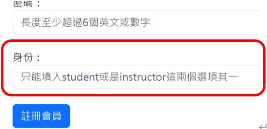
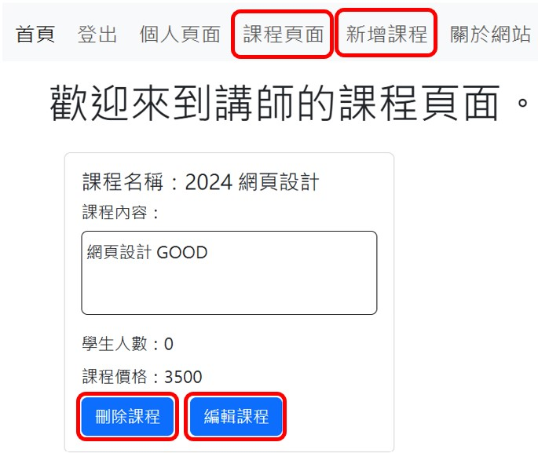
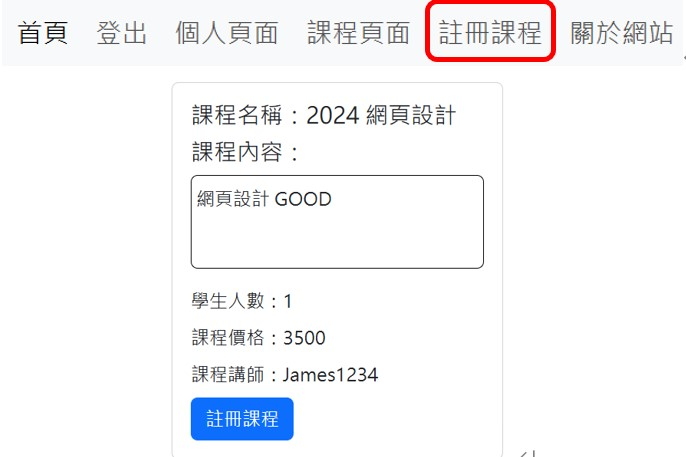
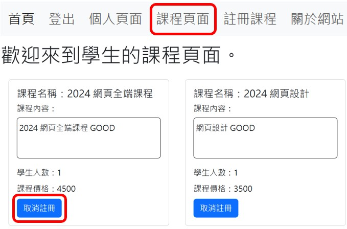

學習系統
本專案使用React.js作為前端框架，其負責顯示各頁面的內容。例如: 登入後會在個人頁面看見個人資料、在課程頁面可以看到使用者所創建或註冊的課程。
以Node.js作為後端框架，用來處理Route、API、資料傳遞、資料加密等。而資料庫則是使用MongoDB。
本系統在註冊會員時，除了帳號密碼之外還須填寫想註冊的身分為教師或是學生。

教師: 您可以在新增課程頁面進行新課程的建立。而在課程頁面您可以看見已創建的課程，也可以進行課程內容的編輯或將課程刪除。

學生: 您可以在註冊課程頁面進行搜尋並註冊課程。註冊完後，在課程頁面可以看見已註冊的課程，您也可以在課程頁面進行取消註冊課程。


因免費發佈網頁的網站的政策為"後端伺服器不使用時會進入休眠"。 所以本專案在登入或註冊會員等與後端有關之功能可能無法使用，請見諒。
Github(前端)
Github(後端)
前往網站
聯絡方式
作者: 邱泓叡
信箱: hongjuichiou.james@gmail.com